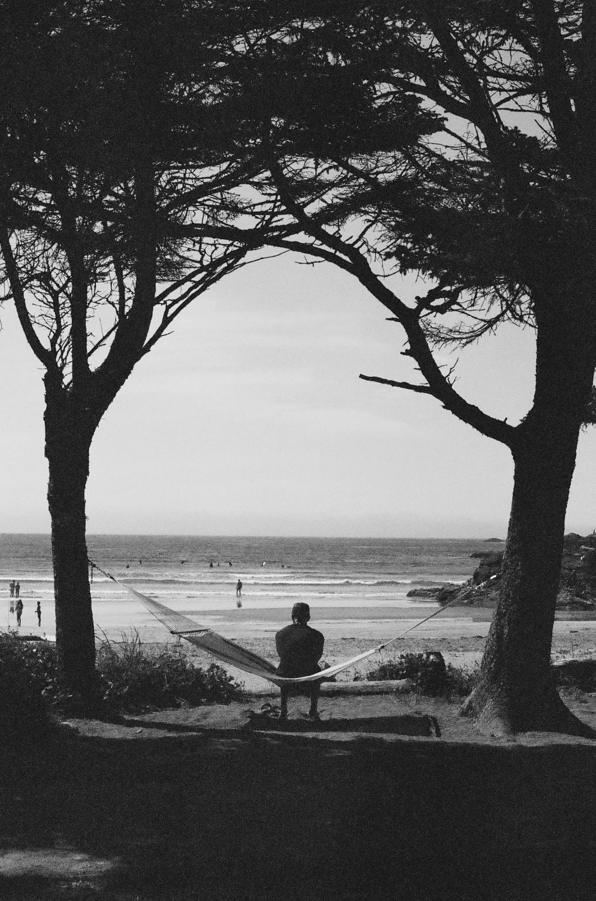
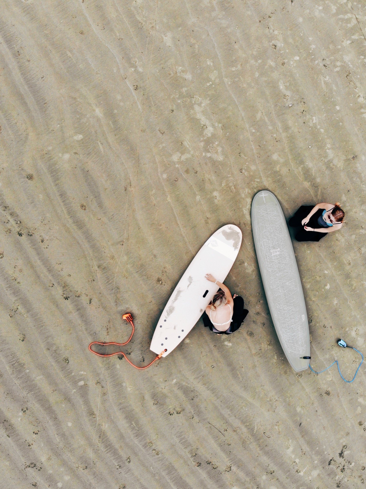
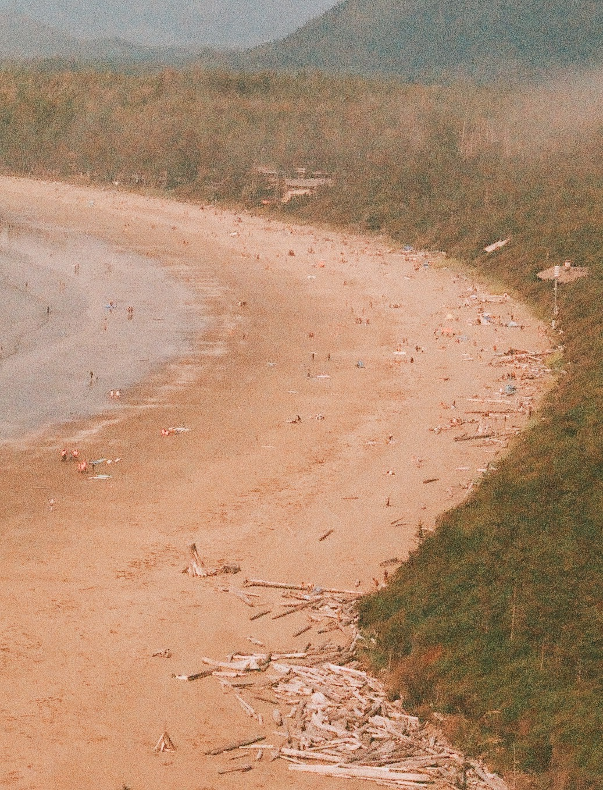
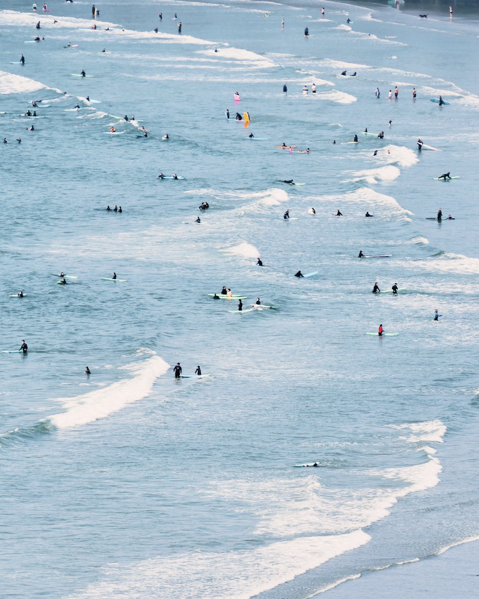
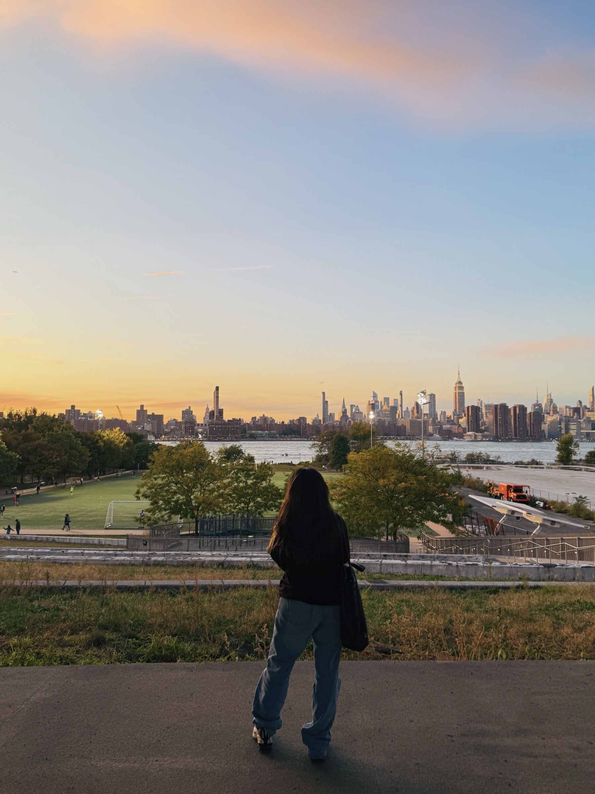

About
Classically trained across Paris, Toronto, and New York — with a craft-first foundation and a systems mind.
Dyslexic by nature: wired to see what others overlook. Completing a masters in Digital Product Design at Parsons, focused on clarity, accessibility, and building confident user experiences.


The Journey
Told I'd never make it to university.
Now completing a master's in New York.




Nanaimo, Vancouver Island
Grew up staring at Vancouver across the strait, knowing I'd belong in a city one day. I was told post-secondary wasn't realistic for me because of my cognitive disabilities — so I learned to approach things differently. Technology became the language I think, create, and build in.

Paris + Toronto
At 17 I studied graphic design through Parsons in Paris — and saw the world I wanted. At 18 I left the island, moved across the country to Toronto to study technology, and started building toward something bigger.



New York
Moved here this past August and plan to stay. I'm at Parsons School of Design studying Digital Product Design, with a strong focus on accessibility and systems thinking. My dyslexic mind and deep visual foundation give me a perspective that's hard to replicate.